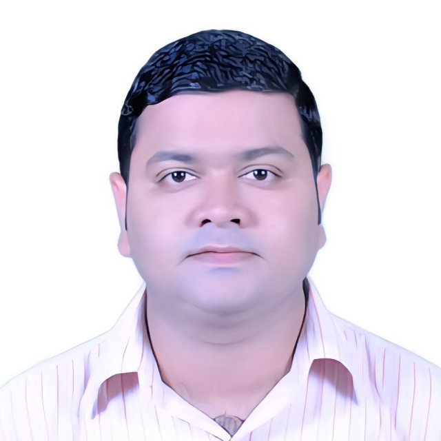

Dr. Abhishek
Panda
Assistant Professor, Department of Community Medicine
Community physician in a tribal-majority mining district of western Odisha. I teach epidemiology and biostatistics, coordinate national health programmes, and build free web tools that make good public health practice easier to use.

About
I teach and practise community medicine at GMCH Sundargarh. The district is tribal-majority, depends on mining and carries a heavy sickle cell burden, so the public health questions here are immediate.
I trained at S.C.B. Medical College, Cuttack (MBBS, 2014) and M.K.C.G. Medical College, Berhampur (MD in Community Medicine, 2020). I taught at M.K.C.G. and at Shri Jagannath Medical College, Puri, before joining GMCH Sundargarh in January 2024.
Malaria, filariasis, tuberculosis and maternal and child health fill the daily work here. I teach Community Medicine to MBBS students under the CBME curriculum, in the classroom, on clinical postings and in the field, and coordinate the college's work in NTEP, NVBDCP, RMNCAH+N and immunisation. I am a resource person and master trainer for IMNCI, NTEP, NLEP and biomedical waste management.
I sit on the Medical Education Unit and the Medical Research Unit, and serve as Nodal Officer for the Ayushman Bharat Digital Mission (ABDM). A growing share of my time goes to digital health and AI fluency: helping doctors, teachers and students use AI tools well and check what those tools produce.
The #CM-APP tools on this site come from the same place. Each began with a real classroom or clinic problem, such as a statistic students keep misreading or a calculation a colleague needs for a dissertation.
Career & training
Experience & Qualifications
Experience
-
Assistant Professor, Community Medicine
Government Medical College & Hospital, Sundargarh
Jan 2024 – present -
Assistant Professor, Community Medicine
Shri Jagannath Medical College & Hospital, Puri
Apr 2022 – Jan 2024 -
Senior Resident / Tutor, Community Medicine
Shri Jagannath Medical College & Hospital, Puri
Mar 2021 – Apr 2022 -
Senior Resident / Tutor, Community Medicine
M.K.C.G. Medical College & Hospital, Berhampur
Jul 2020 – Mar 2021 -
Junior Resident, MD Community Medicine
M.K.C.G. Medical College & Hospital, Berhampur
Jun 2017 – Jun 2020
Qualifications
-
PG Diploma in Applied Epidemiology
National Institute of Health & Family Welfare (NIHFW), New Delhi
-
PG Diploma in AI/ML in Healthcare
Clini Launch Research Institute (CLRI)
-
Fellowship in Digital Health
Medvarsity
-
MD, Community Medicine
M.K.C.G. Medical College, Berhampur, Odisha
-
MBBS
S.C.B. Medical College, Cuttack, Odisha
Certifications & Continuing Professional Development
- Basic Course in Medical Education (BCME)S.C.B. Medical College, Cuttack (Regional Centre) ·
- Basic Course in Biomedical Research (BCBR)ICMR–NIE, SWAYAM–NPTEL ·
- Advanced Epidemiology WorkshopJIPMER International School of Public Health, Puducherry ·
- Essential Epidemiologic Tools for Public Health PracticeJohns Hopkins University
- Data and Health Indicators in Public Health PracticeJohns Hopkins University
- AI in Healthcare (Certificate Programme)NBEMS, MoHFW, Government of India ·
- AI for CliniciansWadhwani School of AI, IIT Madras ·
- AI in HealthcareEICTA, IIT Kanpur
- AI in HealthcareEICTA, MNIT Jaipur
- Foundation and Potential of AI in HealthcareUniversity of Colorado System
- Generative AI for HealthcareGoogle Cloud
- Introduction to Using Generative AI in Public HealthJohns Hopkins University
- Google AI Professional CertificateGoogle · 8 courses
- Google Prompting EssentialsGoogle · 4 courses
- Microsoft Copilot: Your Everyday AI CompanionMicrosoft · 3 courses
- Fundamentals of Microsoft 365 Generative AIMicrosoft
- Data Analysis and Visualization with Generative AI in ExcelMicrosoft
- AI for Education, Basic & AdvancedKennesaw State University
- ChatGPT Foundations for TeachersOpenAI
Best Paper Award, APCRICON 2018
20th Annual National Conference of the Association for Prevention and Control of Rabies in India, New Delhi, 7–8 July 2018.
Publications & projects
Research
My research interests are epidemiology, biostatistics, research methodology and evidence synthesis, digital health and AI, and medical education. Field projects follow the district's programmes, from filariasis elimination to maternal health services.
Publications
-
Rational drug utilization in geriatric patients: a systematic review of prescribing practices, polypharmacy, and medication safety
Panda A, Narmada Reddy P, Mohanty R. CME J Ger Med. 2026;18(7):97–112.
Systematic review -
A global perspective on mental health in medical students: evidence from systematic review and meta-analysis
Kumari T, Singh A, Panda A. Am J Forensic Psychol. 2026;28(1):19–26.
Systematic review & meta-analysis -
Comparison of analgesic efficacy between the adjuvants dexamethasone and clonidine on supraclavicular brachial plexus block: a randomised study
Behera CS, Nayak GK, Panda A. Ann Int Med Den Res. 2020;6(2):AN26–AN30.
Randomised study -
Comprehensive Lung Disease: Infection, Pathology and Oncology
Chauhan S, Panda A, Mishra P, Vincent S, Verma N. New Delhi: Professional Publication Services; 2026. 337 p.
Book chapter
Research Projects
-
Evaluation of maternal health services at Village Health Sanitation & Nutrition Day (VHSND) sites in the aspirational blocks of Sundargarh district
UNICEF-funded project
-
Post-MDA Coverage Evaluation Surveys, Sundargarh and Jharsuguda districts
Mass Drug Administration for the elimination of lymphatic filariasis, 2024 and 2025 rounds
In the classroom & the field
Teaching
Undergraduate Community Medicine
Theory and practical classes and clinical postings in Community Medicine under the CBME curriculum, mapped to competencies.
Community-Based Training
Field visits, postings at the rural and urban health training centres, and the Family Adoption Programme.
Epidemiology & Biostatistics
Study design, measures of association, screening test evaluation and reading routine data from HMIS and NFHS, taught with worked examples from Sundargarh.
National Health Programmes
Resource person and master trainer for IMNCI, NTEP, NLEP and biomedical waste management. Coordinates the college's work in NTEP, NVBDCP, RMNCAH+N and immunisation.
Medical Education & Research
Member of the Medical Education and Medical Research Units. Course coordinator and resource faculty for the NMC Basic Course in Medical Education at GMCH Sundargarh in April 2026. Guides MBBS students' short-term research projects during elective postings.
Digital Health & AI Fluency
Nodal Officer for the Ayushman Bharat Digital Mission. Sessions for doctors, teachers and students on using AI tools in teaching, assessment and research, and on checking their output. Runs the Digital & AI Fluency Clinic for Healthcare Professionals, a WhatsApp learning group.
Talks & training
As a Resource Person
-
Cross-Examining the Machine: Building AI Fluency for FMT Experts
Invited online lecture · AFMTE Gujarat, Monthly Faculty Lecture Series
-
World No Tobacco Day: district observance and awareness competition
Organiser and speaker · GMCH Sundargarh
-
Basic Course in Medical Education (NMC)
Course coordinator and resource faculty · GMCH Sundargarh, April 2026
-
HPV vaccination: operational planning, multi-stakeholder session
Resource person · District health programme
-
Heat-related illness: sensitisation for healthcare professionals
Resource person · Sundargarh district (NPCCHH)
-
CHO refresher training: leprosy (NLEP) module
Facilitator · Community Health Officers
-
Malaria and dengue: sensitisation for private practitioners
Speaker · Vector-borne disease programme
-
Biomedical waste management: staff training
Facilitator · GMCH Sundargarh
#CM-APP series · open tools · free to use
Tools I Build
Single-file web tools for medical students, teachers, residents and programme staff. Each one started from a real teaching or clinic problem.
IMNCI Case Assistant
Digital IMNCI case recording forms for Medical Officers, for the sick young infant and the sick child. It classifies each case and lists the treatment from the MoHFW IMNCI Chart Booklet (2023), keeps a follow-up register and exports Excel and PDF.
In the Workshop
Built, but not on this site yet.
Not-Only-p-Value Calculator
A guided 12-test statistical wizard with a full computation engine, for dissertations and manuscripts.
Biostatistician Chatbot
Reads your Excel or Word file and works through the analysis with you, sheet by sheet.
R×C p-Value Calculator
Contingency-table testing, including the Fisher–Freeman–Halton exact test, built for phones.
ICD-10 Coding Assistant
WHO ICD-10 (Version 2019) lookup and coding help for faculty and residents.
PSM Quiz Arena
Gamified, AI-generated MCQ practice across community medicine topics.
Child–Mother App
The MCP card, digitised: WHO growth curves, the immunisation schedule and developmental milestones.
Contact
Happy to talk research, teaching, or anything in public health.